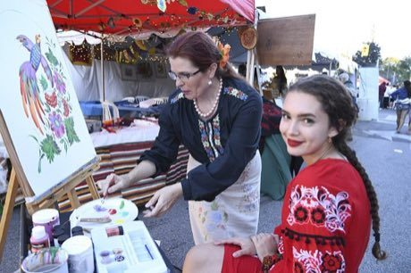

Home / Living Traditions / Northern and Eastern Europe
Playable heritage gamePetrykivka painting
Also known as Петриківський розпис
Petrykivka is a decorative painting from central Ukraine in which flowers, berries and birds grow from single pressed strokes of a fingertip or a soft brush. Bright colours glow on a dark or pale ground, finished with fine curling lines.


How to play
- Look at the framed picture: it shows the finished panel.
- Dip the tool in a colour, then press and drag to paint. A slow, steady hand lays a fat line that thins as the paint runs out.
- Follow the lit guide lines and dab the petals, leaves and berries; tap a shape to fill it where a step asks for fills.
- Press Next when a step is done, and finish with the fine curls.
Rules at a glance
- Score: how closely your strokes follow the guide in the right colour, and how much of each shape holds the right colour.
- Where the design is symmetric, an even pair of halves earns a bonus.
- Paint outside the guide counts against you; undo takes back the last stroke.
- Three stars need a careful, steady hand.
About the tradition
Petrykivka comes from the village of Petrykivka in central Ukraine, where women painted flowers and birds on house walls, chests and paper. Colour is pressed on with a fingertip or a soft brush, and the finest curls were once made with a cat-whisker brush.
Origins
A living tradition passed from person to person; it is not tied to a single dated origin. It belongs to the cultural world of Northern and Eastern Europe.
Credits
- Photo: Mykola Swarnyk, CC BY-SA 4.0, source on Wikimedia Commons
- Text: CC BY-SA 4.0, World Heritage Games.
Sources

Get the app
Petrykivka painting is one of 8 folk paintings in the Folk Painting of the World app for Android. Submitted to Google Play; in review. Store links appear here the day it goes live. One app, many traditions, no account needed.
More games to play


Khokhloma Pattern Painting
Russia · Crafts and makingPlay preview · in the Paper & Paint of the World app


More from Ukraine

Cross-Stitch Pattern Weaving
Ukraine · Crafts and makingPlay preview · in the Textile Crafts of the World app

Shashki
Ukraine +2 · Board and table games
Trembita
Ukraine · Musical instruments